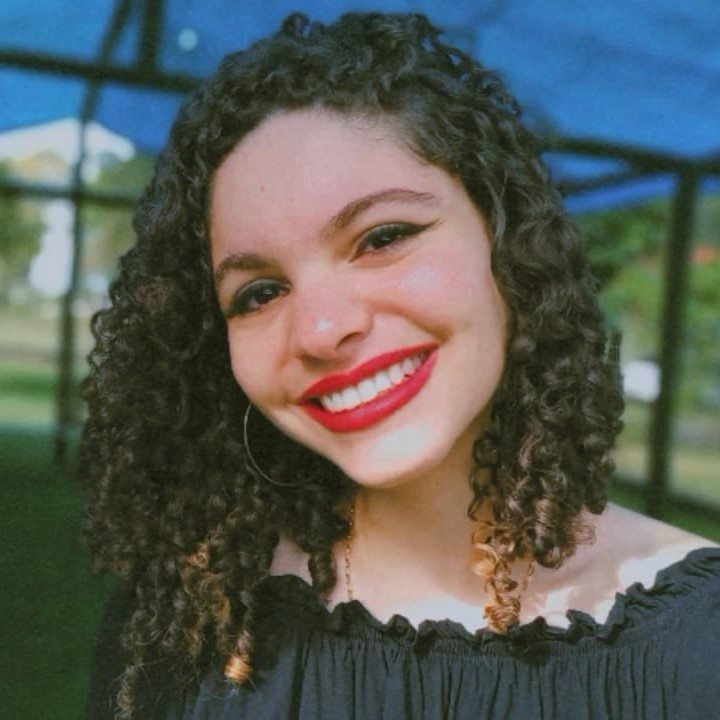
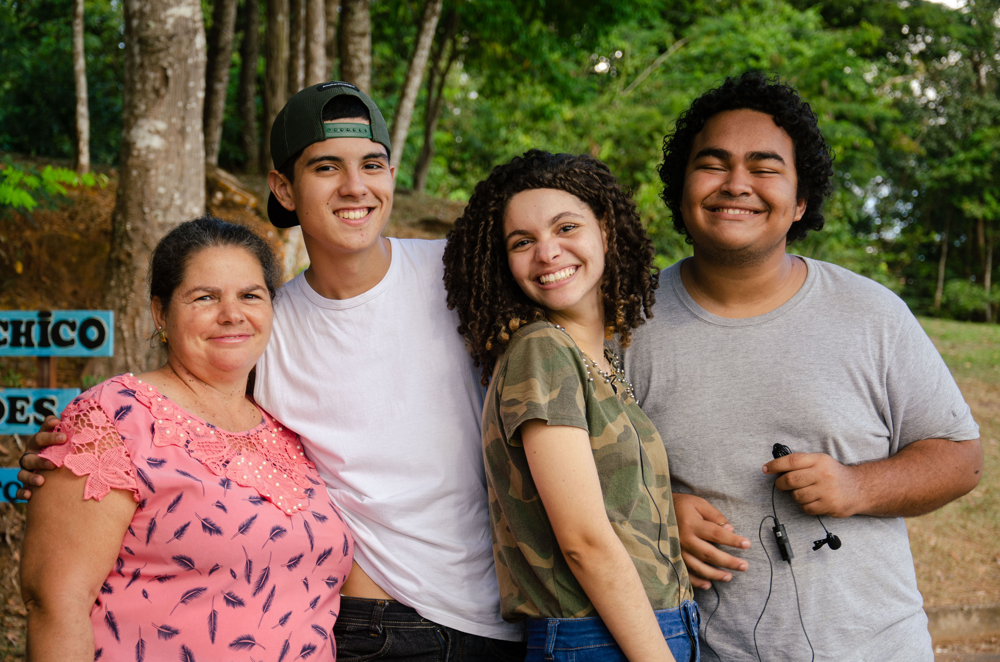
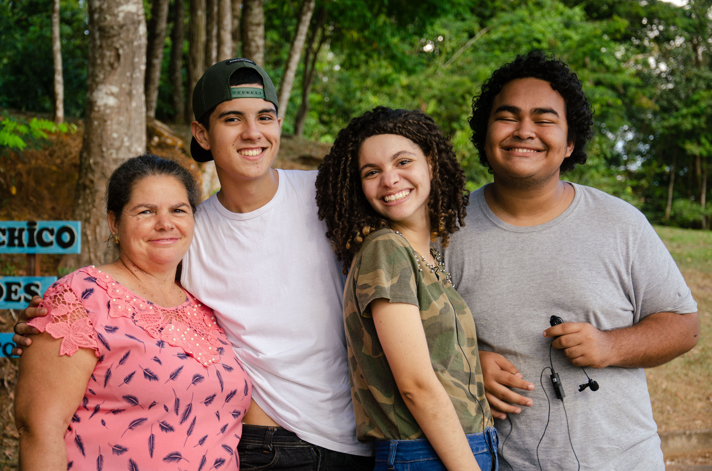

Quem sou eu?
Eu sou a Maria Eduarda Ribeiro Viana, tenho 17 anos, nasci em Ouro Preto do Oeste, município localizado no interior de Rondônia e resido na cidade desde então. Atualmente sou estudante do curso Técnico em Informática no Instituto Federal de Rondônia, Campus Ji-Paraná.



 
